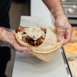
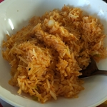
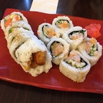

Your source to your favorite local restaurants and food sources.
Home
What's happening?
Local restaurant "Too Sad To be True" has closed its doors. Due to the COVID-19 pandemic. This headline
news is brought to you by the general trend for Vancouver's Dine Out Community. Hopefully they'll recover.
It almost seems like yesterday when there were only 2 bubbles tea locations in Kerrisdale.
(Sorry, Pho Tan. You're a great Pho Restaurant but your bubble tea isn't really bubble tea.
Starting with one of the 1st Bubble Tea places, "Orange Corner" and "Tea Station" (茶站), Kerrisdale
was a popular area for Point Grey Secondary and Magee Secondary Students to get their sip of
Bubble Tea. However; after BBT Cafe and Cabin 555 popped up, Tea Station closed down due to competiton.
After the closing of Tea Station, local residents thought the only bubble tea locations will just be the
2: BBT Cafe and Orange Corner. The residents were dead wrong. Not only did they get 1 more, they got 2,
no 3, no 4, NO! 5 MORE! Starting with Chatime, Boba Boy, ComeBuy (shortly replaced by ChunYang Tea),
YiFang Taiwan Fruit Tea, and Chase Tea.
Donair Dude

Not into hard spices? How about a little less focused and more simple? If you think hard spices
in types of food like curry is too much, have you thought about more simplier foods? But don't want
to get too simple with, for example, Japanese food? Well there are a whole bunch of other types of
foods from other countries! Known as Gyro in Greece, Kebab in the Middle East and simply Donair in
North America.
Kimchi Fried Rice

Got a little bit of time before you sleep? Or are you not sure what to do with left over rice?
I understand not everyone likes rice to eat plain. Good thing, they actually come fried! Yes, fried
rice! No not like french fries, but leftover rice that has been cooked via the pan with your choice
of spices and ingredients.
Sushi King

It is hard to believe, I used to hate sushi. I didn't want to eat anything raw. I remember my mom
sigh in relief that I didn't like it because sashimi or good quality raw fish is expensive. Then a friend
of mine encouraged me to eat it more and somehow my brain rewired. And I was absolutely in love. Years later
I would find myself in Japan, eating one of the rawest (but fresh) seafood-don. But enough about that,
sometimes I get hungry and there aren't many places that are quick and convinient. Sushi King has parking
spots in the back and like most sushi places, if you order ahead of time you do get a discount. I usually do it
the day before so I can get about a 15% discount. Don't worry, they don't make the sushi the day before and leave it
there and wait.